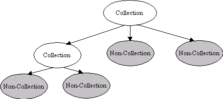

The WebDAV1 Content Provider (DCP) implements a Content Provider for the Universal Content Broker (UCB). It provides access to WebDAV and standard HTTP servers. The DCP communicates with the server using the WebDAV protocol which is an extention to the HTTP protocol or using the plain HTTP protocol in case the server is not WebDAV enabled.
The DCP provides two types of content: a Folder or Document which corresponds to a collection or non-collection (nodes and leafs) in WebDAV respectively.
A DCP Folder is a container for other DCP Folders or Documents.
A DCP Document is a container for Document data/content. The data/content may be anything, a WebDAV server, like an HTTP server, does not necessarily mandate what type of data/content may be contained within Documents. The type of data/content is defined by the MediaType property which is different from the content type returned from the getContentType method. The MediaType property is mapped to the equivalent WebDAV property and the WebDAV server calculates the value.

DCP Folders implement the interface XContentCreator. DCP Documents and DCP Folders support the command„insert. To create a new child of a DCP Folder:
Let the parent folder create a new content by calling its createNewContent method. The content type to use for new folders is application/vnd.sun.star.webdav-collection. To create a new document, use the type string application/http-content.
Set a title at the new folder/document. ( Let the new child execute a setPropertyValues – command, which sets at least the property„Title to a non-empty value ).
Let the new child ( not the parent! ) execute the command „insert“. This will commit the creation process and persist the newly created content on the WebDAV server
DAV resources that require authentication can be accessed using the interaction handler mechanism of the UCB. This means, the DAV content will call an interaction handler supplied by the client in order to let it handle an authentication request. The implementation of the interaction handler should be able to collect the user name / password from somewhere (i.e. Login Dialog ) and can supply this data as an interaction response.
In addition to the manadatory UCB properties, the DCP supports reading and writing all DAV "live" and "dead" properties. Some DAV "live" properties are mapped additionally to UCB properties and vice versa (i.e. DAV:creationdate is mapped to DateCreated). Adding and removing dead properties is also supported by the implementation of the XPropertyContainer interface of a DCP Content.
Property Values:
The DCP cannot determine the semantics of unknown properties. Thus the values of such properties will always be presented as plain text ( as they were returned from the server).
Namespaces:
The following namespaces are well-known to the DCP:
Properties with these namespaces can be addresssed using a UCB property name which is the concatenation of namespace and name (i.e. DAV:getcontentlength)
Dead proprties with namespaces that are not well-known to the DCP can be addressed using a special UCB property name string, that contains both the namespace and the property name. Such a special property name string must look as follows:
<prop:the_propname xmlns:prop="the_namespace">
The DCP internally applies the namespace "http://ucb.openoffice.org/dav/props/" to all UCB property names:
that are not predefined by the UCB API.
that do not start with a well-known namespace.
that do not use the special property name string to encode namespace and name.
For example, a client can do an addProperty( .... "MyAdditionalProperty" ... ). The resulting DAV property will have the name "MyAdditionalProperty", its namespace will be "http://ucb.openoffice.org/dav/props/". However, the DCP client will never see that namespace. He can always use the "simple" name "MyAdditionalProperty".
DAV / UCB Property Mapping:
|
DAV:creationdate |
DateCreated |
|
DAV:getlastmodified |
DateModified |
|
DAV:getcontenttype |
MediaType |
|
DAV:getcontentlength |
Size |
|
DAV:resourcetype |
(used to set IsFolder, IsDocument, ContentType) |
Each DCP content has an identifier corresponding to the following scheme:
vnd.sun.star.webdav://host:port/<path>
where <path> is a hierarchical path of the form
<name>/<name>/.../<name>
where <name> is a string encoded according to the URL conventions.
It is also possible to use standard HTTP-URLs. In this case the implementation will determine by itself, if the requested resource is DAV enabled.
Examples:
vnd.sun.star.webdav://localhost/davhome/
vnd.sun.star.webdav://davserver.com/Documents/report.sdw
http://davserver.com/Documents/report.sdw
Note the that WebDAV URL namespace model is the same as the HTTP URL namespace model.
The following table gives an overview of the different DCP contents.
|
|
UCB Type (returned by XContent::getContentType ) |
Properties |
Commands |
Interfaces |
|---|---|---|---|---|
|
Document |
application/http-content |
[readonly] ContentType [readonly] DateCreated [readonly] DateModified [readonly] IsDocument [readonly] IsFolder [readonly] MediaType [readonly] Size Title |
getCommandInfo getPropertySetInfo getPropertyValues setPropertyValues insert delete open
|
lang::XTypeProvider, lang::XServiceInfo lang::XComponent ucb::XContent ucb::XCommandProcessor beans::XPropertiesChangeNotifier beans::XPropertyContainer beans::XPropertySetInfoChangeNotifier ucb::XCommandInfoChangeNotifier container::XChild |
|
Folder |
application/vnd.sun.star.webdav-collection |
[readonly] ContentType [readonly] DateCreated [readonly] DateModified [readonly] IsDocument [readonly] IsFolder [readonly] MediaType [readonly] Size Title |
getCommandInfo getPropertySetInfo getPropertyValues setPropertyValues insert delete open transfer |
same as DCP Folder, plus ucb::XContentCreator |
1Refer to http://www.webdav.org and http://www.fileangel.org/docs/DAV_2min.html for an overview.